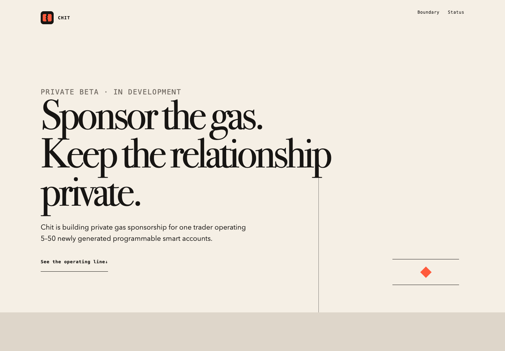
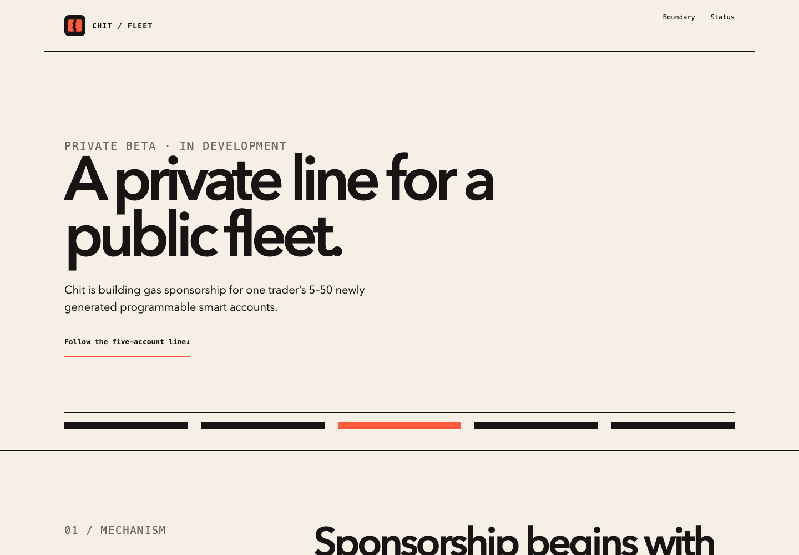
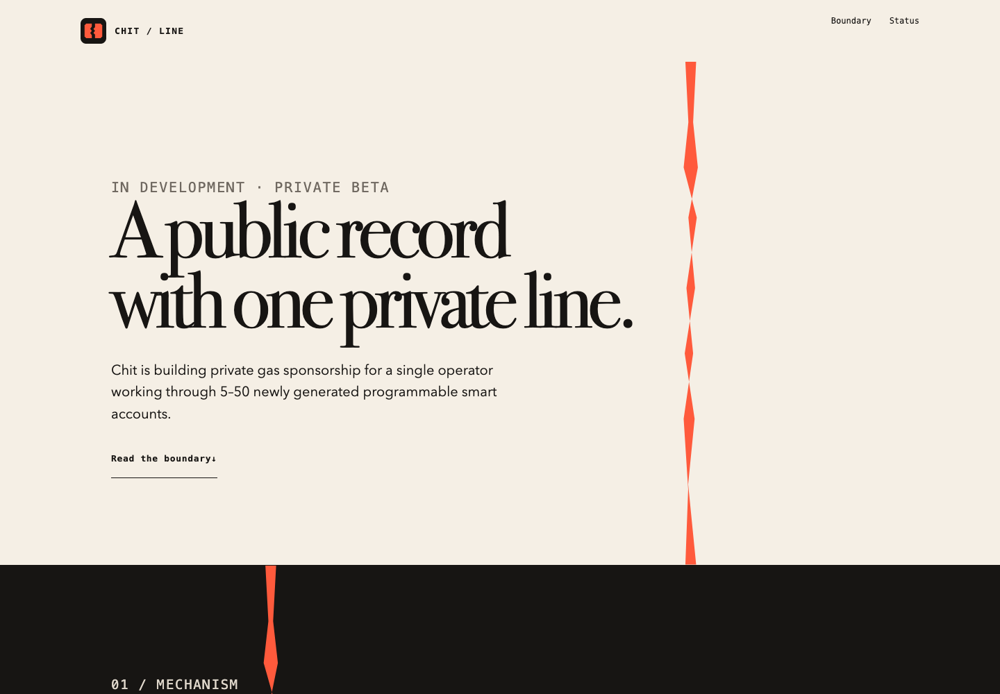

Direction 01
Quiet Infrastructure
DFII: 14 · DNA-Q-I-E-S-R
Editorial restraint with one blind-seam route quietly carrying the reader through the page.
Phase 2 revision · light-only

Direction 01
DFII: 14 · DNA-Q-I-E-S-R
Editorial restraint with one blind-seam route quietly carrying the reader through the page.

Direction 02
DFII: 13 · DNA-F-P-I-M-C
Industrial clarity organized around a sparse five-account procession, never a dashboard.

Direction 03
DFII: 15 · DNA-P-L-S-T-C
Severe premium paper fields punctuated by one controlled coral tear per major section.